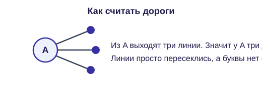
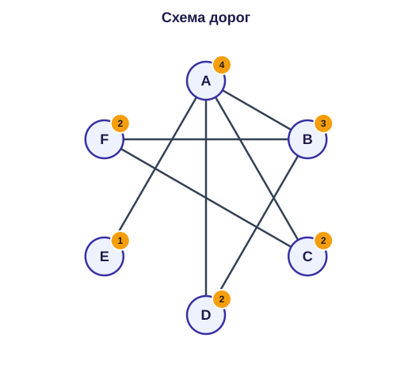
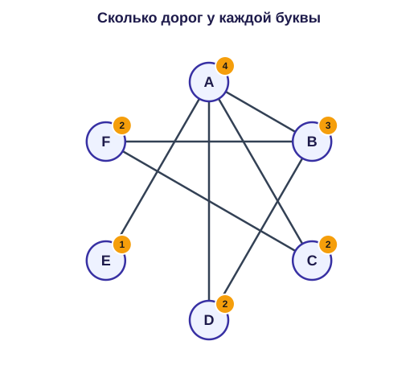
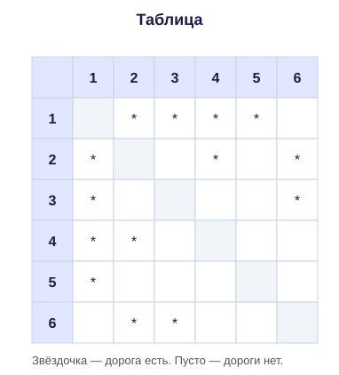
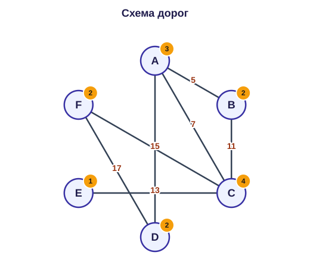
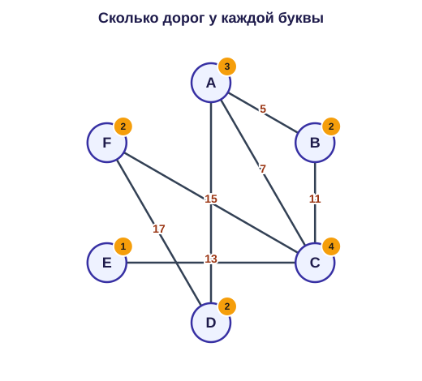
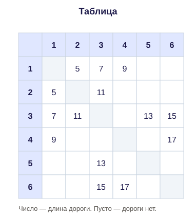
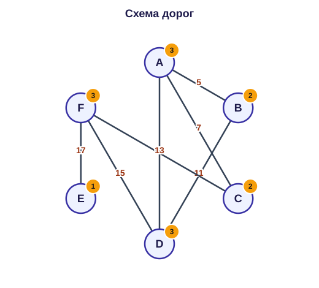
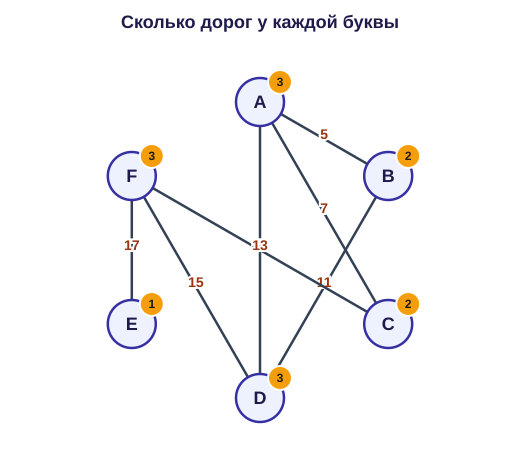
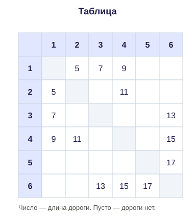

Рядом две вещи. Слева схема: города буквами, между ними дороги. Справа таблица: те же города, но под номерами. Какая буква какому номеру равна, не подписано. Это и надо восстановить.

Число линий из точки называют степенью. На экзамене слово можно не писать. Ищем не «центральную» точку, а точку с редким числом дорог. Если число встретилось один раз, это якорь: буква и номер — одна и та же вершина.
В таблице звёздочка или число значит, что дорога есть. Пустая клетка — дороги нет. По диагонали всегда пусто. Дорога 2—4 и дорога 4—2 — одна и та же, в сумму её берут один раз.
Спрашивают номера двух букв. В ответе две цифры по возрастанию. Сначала якоря, потом соседи, если букв с одинаковым числом несколько.
Пример. Какие номера у пунктов A и B? Запишите две цифры по возрастанию, без пробела.



Ответ: 12.
Нажмите «В интерпретатор» под кодом. Программу можно менять и запускать заново.
from collections import Counter
letters = {'A': 4, 'B': 3, 'C': 2, 'D': 2, 'E': 1, 'F': 2} # МЕНЯТЬ: сколько дорог у буквы
rows = {1: 4, 2: 3, 3: 2, 4: 2, 5: 1, 6: 2} # МЕНЯТЬ: сколько отметок в строке таблицы
once = {deg for deg, cnt in Counter(letters.values()).items() if cnt == 1}
for name, deg in letters.items():
if deg not in once:
continue
nums = [num for num, got in rows.items() if got == deg]
print(name, nums[0])
# Редкие степени печатаются как «буква номер».
# Номера пунктов A и B запишите двумя цифрами по возрастанию.В таблице уже километры. Нужные буквы видны по редкому числу дорог. Дальше в таблице на пересечении их номеров читают длины и складывают.
Пример. Найдите сумму длин дорог A—C и C—E. Только число.



Ответ: 20.
Нажмите «В интерпретатор» под кодом. Программу можно менять и запускать заново.
from collections import Counter
letters = {'A': 3, 'B': 2, 'C': 4, 'D': 2, 'E': 1, 'F': 2} # МЕНЯТЬ: сколько дорог у буквы
rows = {1: 3, 2: 2, 3: 4, 4: 2, 5: 1, 6: 2} # МЕНЯТЬ: сколько отметок в строке таблицы
once = {deg for deg, cnt in Counter(letters.values()).items() if cnt == 1}
for name, deg in letters.items():
if deg not in once:
continue
nums = [num for num, got in rows.items() if got == deg]
print(name, nums[0])
# Когда номера найдены, длины берут из таблицы. Подставьте свои.
first = 7
second = 13
print(first + second)Тупик — пункт с одной дорогой. Его номер часто виден сразу. Сосед тупика среди нескольких похожих пунктов один: в таблице он связан с номером тупика. Потом читают две длины и складывают.
Пример. Найдите сумму длин дорог E—F и F—C. Только число.



Ответ: 30.
Нажмите «В интерпретатор» под кодом. Программу можно менять и запускать заново.
from collections import Counter
letters = {'A': 3, 'B': 2, 'C': 2, 'D': 3, 'E': 1, 'F': 3} # МЕНЯТЬ: сколько дорог у буквы
rows = {1: 3, 2: 2, 3: 2, 4: 3, 5: 1, 6: 3} # МЕНЯТЬ: сколько отметок в строке таблицы
once = {deg for deg, cnt in Counter(letters.values()).items() if cnt == 1}
for name, deg in letters.items():
if deg not in once:
continue
nums = [num for num, got in rows.items() if got == deg]
print(name, nums[0])
# Когда номера найдены, длины берут из таблицы. Подставьте свои.
first = 17
second = 13
print(first + second)